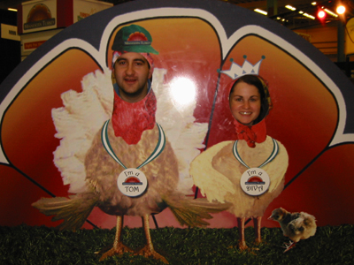

February 24th, 2006
I had a birthday last week. Now I am older than I was. I am now TWENTY EIGHT.
Though this was technically a short week, it feels long and exhausting. I’m very much looking forward to two days off. I just want to clean the house, do art projects and relax.
Posted in General | No Comments »
February 14th, 2006
This past weekend we got bopped by a major nor-easter, or if you’re watching the news, OMG IT’S THE BLIZZARD OF 2006. Yes, it was a lot of snow but p.s. the world did not end. Saturday we were in NYC for the day and the snow started to fall around 3p but it didn’t begin to stick until around 7 or so. We made it back to CT in plenty of time and even had a nice dinner before the heavy snowfall began. When we woke up in the morning there was about 8-10 inches of fluff on the ground. The TV told us that we hadn’t seen the worst of it yet and they were right. By the time the snow stopped falling at 4pm, there was another 10-14 inches of snow. Watching it pile up on the deck furniture was pretty darn entertaining. I took a bunch of pictures but I haven’t looked at any of them yet.
Once the snow stopped, I bundled up and went out to shovel. I was the first on the block to go out and the expanse of snow made it very difficult to tell where our sidewalk was. I shoveled the first step and the second step; I was ready to continue on but I couldn’t figure out why my shovel wouldn’t go down the whole way. Then it hit me: there was another step to be shoveled. Once I hit sidewalk level it was hysterically obvious just how much snow we’d gotten. It came up to about three inches above my knee, which measures at about 22 inches. I think that’s the most snow I’ve ever seen out of one snowfall.
It took about an hour and a half for Jeremie and I to shovel the walkway, the sidewalk, the driveway and the sidewalk and walkway of a nice old lady down the block. Stupidly, I wore jeans to shovel and when I came in they were totally solked and my skin was bright red with white patches. Thankfully I didn’t have to amputate.
Posted in General | No Comments »
February 14th, 2006
Stupid gmail. Stupid Firefox. Stupid crashing. I lost a big long post because I didn’t save as draft. ANNOYING.
Posted in General | No Comments »
January 20th, 2006
We have a friend here at work who’s mom lives in Puerto Rico. She grows and roasts her own coffee and said friend always brings some back to be brewed at the office. This morning is Lucky Morning. I got a big cup’s worth and topped it off with a little regular milk (this blend scoffs at skim)… pure bliss. It’s strong, smoky and a bit bitter on its own but the small amount of milk rounds it out perfectly. So nice.
So it’s been awhile since I posted; inertia is a hard thing to overcome. I’ve been busy these first few weeks of January. I took a trip to Minneapolis to visit the fam, I’ve been doing a lot of wedding stuff in my “spare” time and last weekend we lost power for a day, due to a big storm. There are still people without power so I feel incredibly lucky to have been inconvienienced for such a short time in comparison.
Last weekend, in-between the relaxing part and the storm part we tried a new place in South Norwalk: Chocopologie. Chocopologie is a cafe/bakery/chocolate shop. They have very good hours (M-W 7:30a – 10p, Thurs 7:30a – midnight, Fri 7:30a – 2a, Sat 9:30a – 2a and Sunday 10a – 6p) and fabulous food, desserts, coffee and hot chocolate at reasonable prices. There isn’t a website specific to the restaurant but it’s run by a chocolatier, Fritz Knipschildt and you can find a bit more information about him and his chocolates at Knipschildt Chocolatier. Check it out.
Posted in food, General, i tried it | No Comments »
December 28th, 2005
I decided to read through a month’s worth of stitchnbitch group digest emails and lo but what did I see? Mission Falls 1824 Cotton, my absolute favorite yarn, is coming back! I practically bought out all of the good colors from my favorite yarn shop when I heard it was being discontinued and I’ve been rationing my supply since then. Oooh, I can’t wait until it hits the shelves again.
Posted in knitting | No Comments »
December 27th, 2005
It seems like there’s all of 7 people in the office today. I’ve got my door closed and the music’s going, but I can’t get my mind off the coffee pot. All I want is a freakin cup of coffee but I know I shouldn’t have any in the afternoon if I have any interest in sleeping tonight. I’ve been very good about ignoring caffiene today; just a half cup of coffee this morning and 3 32oz bottles of water (thank heavens I got all the mold out of my Nalgene bottle) but I want more.
Posted in General | No Comments »
December 22nd, 2005
This is my winter hat.

I love it. Other people probably think I look pretty silly in it but I love it. I think that part of what I love is it’s sillyness. It is a nice, warm hat. It covers my ears and it makes me very happy.
Too bad it’s going to be 50F here this weekend.
I upgraded my gallery installation to 2.x. Let’s just say I’m still getting used to it. The new version has several fine qualities but it’s very different than before.
Posted in General | No Comments »
December 4th, 2005
I am completely overwhelmed by reading material. I spent hours this morning catching up on three weekends worth of the New York Times and made a significant dent, just a few sections from yesterday left. However, that doesn’t take into account the 8 NYT book review sections, 14 NYT magazines plus a generous handful of travel sections. Beyond the paper I have 3 books from the library that I’ve yet to read and numerous food magazines. I’m finally caught up with the mail and the bills but I’m taken aback at the amount of paper in our house. We’re just two people; I can only imagine what it’s like for a larger family. The recycling bin will be full this week.
Posted in General | No Comments »
November 24th, 2005

Happy Thanksgiving from a couple of turkeys. I hope your day was as tasty as ours!
Posted in General | No Comments »
November 21st, 2005
Today I realized that I hadn’t put any photos into the gallery since February. No more lazy! I popped in some apple-picking pics, a few shots from my latest trip to Brussels and some photos from my 11 hour trip Seattle adventure this past weekend.
Yes, I pulled a crazy. I needed ~5k flight miles on Northwest to hit Gold Elite for next year and I was able to find a great price out to Seattle. I left at 6a, flew to Detroit & was able to stand by for an earlier flight so I arrived in Seattle a bit before noon. Elias picked me up, we spent the day together (boats, locks, yarn, tea, beach) and I flew back at 10:30. Arrived in Detroit at 5:30a, had some coffee and flew back to HPN. Home by noon. Not bad for 30 hours.
Posted in General | No Comments »